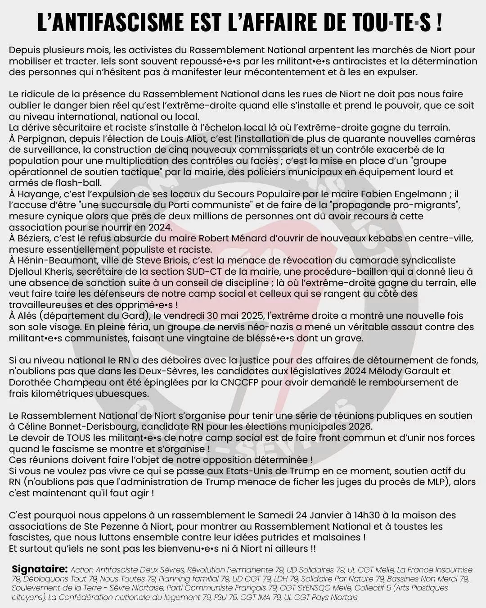

Appel collectif
À Niort, l’antifascisme est l’affaire de toutes et tous
Date de mise à jour indiquée par Facebook · 21 janvier 2026
Repères éditoriaux
Avec Action Antifasciste Deux-Sèvres, des organisations syndicales, associatives et politiques, nous avons relayé l’appel à une contre-réunion publique face au RN. Elle était annoncée pour le samedi 24 janvier à 14 h 30 à la Maison des associations de Sainte-Pezenne, à Niort.
Texte de la publication · Action Antifasciste Deux-Sèvres 79
L’ANTIFASCISME EST L’AFFAIRE DE TOUSTES !
Depuis plusieurs mois, les activistes du Rassemblement National arpentent les marchés de Niort pour mobiliser et tracter. Iels sont souvent repoussé•e•s par les militant•e•s antiracistes et la détermination des personnes qui n’hésitent pas à manifester leur mécontentement et à les en expulser.
Révolution Permanente Deux-Sèvres 79
Nous Toutes 79
Bassines Nonmerci
Solidaires 79
La France Insoumise 79 - LFI 79
Union Locale - CGT - Melle 79
UL CGT du Pays Niortais
Solidaires par nature
PCF 79 - Parti Communiste Français fédération des Deux-Sèvres

Sources
Action Antifasciste Deux-Sèvres 79 · publication relayée par le PCF 79 · bibliothèque Facebook · AR-0002-FB-00898
À lire aussi · Condamnation de dirigeants du RN : réaction du PCF · Le lien d’origine